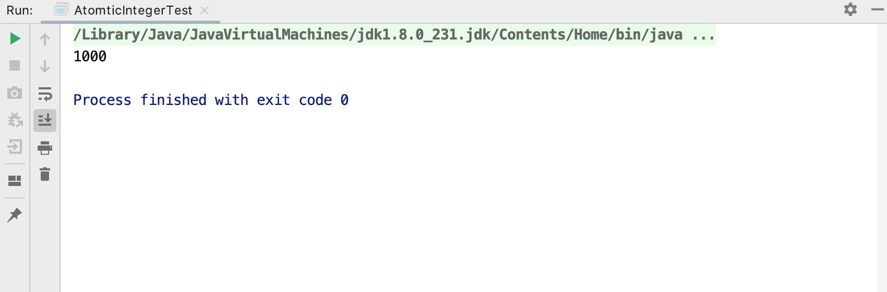
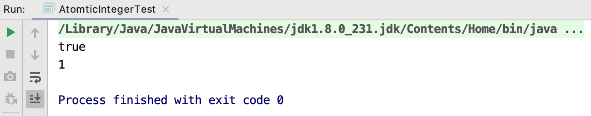
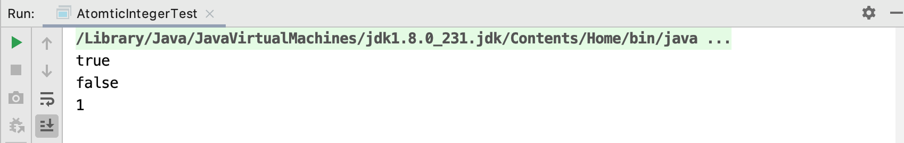
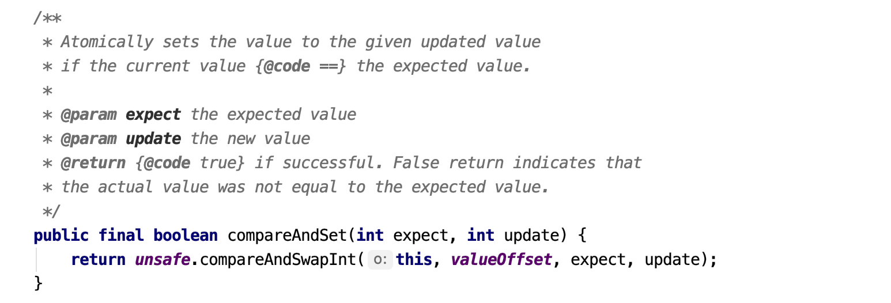
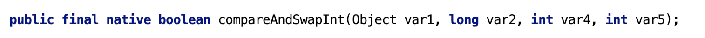
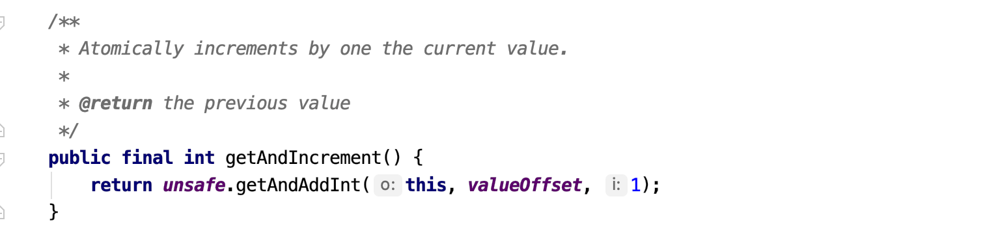
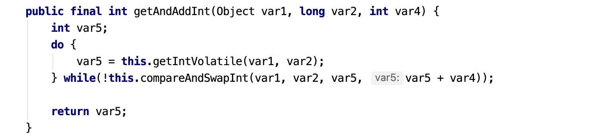
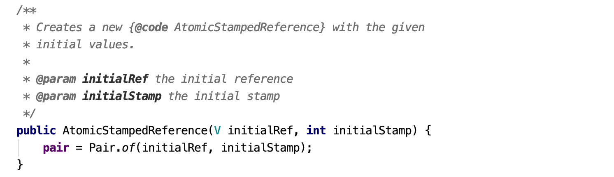
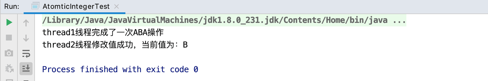
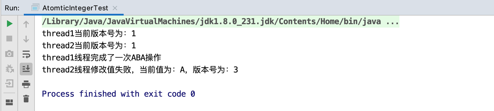

在深入理解volatile关键字一节中，我们提到volatile并不能确保线程安全性，要解决文章中提到的累加例子线程安全问题的话，可以使用同步锁（synchronized）和Atomic类型。但就那个例子来说，使用synchronized同步锁有点小题大作，我们可以选择更为轻量的AtomicInteger来解决。
将前面的例子改写为：
1 | public class AtomticIntegerTest { |
我们将value类型从volatile修饰的int类型改为AtomicInteger类型，这个例子无论运行多少次，结果都是我们期望的1000：

Atomic类型内部并没有通过锁来保证线程安全，那么它们是如何实现的呢？这就是本节要讨论的CAS。
什么是CAS
CAS是Compare-And-Swap的缩写，意思为比较并交换。以AtomicInteger为例，其提供了compareAndSet(int expect, int update)方法，expect为期望值（被修改的值在主内存中的期望值），update为修改后的值。compareAndSet方法返回值类型为布尔类型，修改成功则返回true，修改失败返回false。
举个compareAndSet方法的例子：
1 | public class AtomticIntegerTest { |
上面例子中，通过AtomicInteger(int initialValue)构造方法指定了AtomicInteger类成员变量value的初始值为0：
1 | public class AtomicInteger extends Number implements java.io.Serializable { |
接着执行compareAndSet方法，main线程从主内存中拷贝了value的副本到工作线程，值为0，并将这个值修改为1。如果此时主内存中value的值还是为0的话（言外之意就是没有被其他线程修改过），则将修改后的副本值刷回主内存更新value的值。所以上面的例子运行结果应该是true和1：

将上面的例子修改为：
1 | public class AtomticIntegerTest { |
上面例子中，main线程第二次调用compareAndSet方法的时候，value的值已经被修改为1了，不符合其expect的值，所以修改将失败。上面例子输出如下：

CAS底层原理
查看compareAndSet方法源码：

该方法通过调用unsafe类的compareAndSwapInt方法实现相关功能。compareAndSwapInt方法包含四个参数：
this，当前对象；valueOffset，value成员变量的内存偏移量（也就是内存地址）：1
2
3
4
5
6
7
8private static final long valueOffset;
static {
try {
valueOffset = unsafe.objectFieldOffset
(AtomicInteger.class.getDeclaredField("value"));
} catch (Exception ex) { throw new Error(ex); }
}expect，期待值；update，更新值。
所以这个方法的含义为：获取当前对象value成员变量在主内存中的值，和传入的期待值相比，如果相等则说明这个值没有被别的线程修改过，然后将其修改为更新值。
那么unsafe又是什么？它的compareAndSwapInt方法是原子性的么？查看该方法的源码：

该方法并没有具体Java代码实现，方法通过native关键字修饰。由于Java方法无法直接访问底层系统，Unsafe类相当于一个后门，可以通过该类的方法直接操作特定内存的数据。Unsafe类存在于sun.msic包中，JVM会帮我们实现出相应的汇编指令。Unsafe类中的CAS方法是一条CPU并发原语，由若干条指令组成，用于完成某个功能的一个过程。原语的执行必须是连续的，在执行过程中不允许被中断，不会存在数据不一致的问题。
getAndIncrement方法剖析
了解了CAS原理后，我们回头看下AtomicInteger的getAndIncrement方法源码：

该方法通过调用unsafe类的getAndAddInt方法实现相关功能。继续查看getAndAddInt方法的源码：

结合这两张图，我们便可以很直观地看出为什么AtomicInteger的getAndIncrement方法是线程安全的了：
上图中，var1是AtomicInteger对象本身；var2是AtomicInteger对象的成员变量value的内存地址；var4是需要变更的数量；var5是通过unsafe的getIntVolatile方法获得AtomicInteger对象的成员变量value在主内存中的值。do while循环中的逻辑为：用当前对象的值和var5比较，如果相同，说明该值没有被别的线程修改过，更新为var5+var4，并返回true（CAS）；否则继续获取值并比较，直到更新完成。
CAS的缺点
CAS并不是完美的，其存在以下这些缺点：
- 如果刚好while里的CAS操作一直不成功，那么对CPU的开销大；
- 只能确保一个共享变量的原子操作；
- 存在ABA问题。
CAS实现的一个重要前提是需要取出某一时刻的数据并在当下时刻比较交换，这之间的时间差会导致数据的变化。比如：thread1线程从主内存中取出了变量a的值为A，thread2页从主内存中取出了变量a的值为A。由于线程调度的不确定性，这时候thread1可能被短暂挂起了，thread2进行了一些操作将值修改为了B，然后又进行了一些操作将值修改回了A，这时候当thread1重新获取CPU时间片重新执行CAS操作时，会发现变量a在主内存中的值仍然是A，所以CAS操作成功。
解决ABA问题
那么如何解决CAS的ABA问题呢？由上面的阐述课件，光通过判断值是否相等并不能确保在一定时间差内值没有变更过，所以我们需要一个额外的指标来辅助判断，类似于时间戳，版本号等。
JUC为我们提供了一个AtomicStampedReference类，通过查看它的构造方法就可以看出，除了指定初始值外，还需指定一个版本号（戳）：

我们就用这个类来解决ABA问题，首先模拟一个ABA问题场景：
1 | public class AtomticIntegerTest { |
运行程序，输出如下：

使用AtomicStampedReference解决ABA问题：
1 | public class AtomticIntegerTest { |
程序输出如下：
